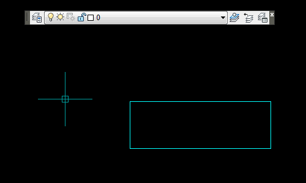

Layer Director
This page is delivered for consistency purposes only, as part of the LeeMac sample module of DynALisp, which shows how DynALisp turns existing AutoLISP programs into a module. The program and its description are the work of Lee Mac, who keeps all the credit for them. The original page, with the latest version, is on Lee Mac's website: https://lee-mac.com/layerdirector.html
| Function Syntax | LDON / LDOFF |
| Current Version | 2.1 |
| Compatible with AutoCAD for Mac? | No |
| Compatible with AutoCAD LT? | Yes |
| Original Page | lee-mac.com/layerdirector.html |
Program Description
This program uses a Visual LISP Command Reactor to automatically set the current layer when a command is called, proceeding to reset to the previous current layer when the command is completed. The target layer will also be created if it doesn't already exist in the drawing.
The data controlling the layer to be set when certain commands are called is tabulated at the top of the code - this may be altered and expanded to suit the user's requirements.
The first item of each list in the table is the name of a standard AutoCAD command or custom AutoLISP command to trigger a layer change. This command name should be the full command name, not a command alias. The command is not case-sensitive and may use wildcards.
To give a few examples, "[DM]TEXT,TEXT" will cue a layer change for the Text, DText and MText commands; "*LEADER" will cue a layer change for the Leader, QLeader and MLeader commands.
The second item is the name of the layer to be set to current when the command is called. This layer will be created if not present in the active drawing. The remaining items are basic layer properties to be applied to layers that are created by the program - the required format for these properties is described in more detail in the program source code.
A 'Force Layer Properties' parameter set in the code determines whether the program will automatically modify the properties of existing layers in the drawing. If enabled, the properties of existing layers will be modified to match those found in the Layer Data described above.
The program also offers an xref-dependent layer assignment option, which will automatically insert external references on a layer matching the xref name, with an optional prefix & suffix, and predefined layer properties which may be configured from the program source code.
Finally, the program also enables the user to automatically configure any number of system variables when a command is invoked, with the system variables reset to their original values upon completing or cancelling the active command.
The program will automatically enable the Command Reactor when loaded on drawing startup, and the current layer will be automatically changed when any of the listed commands are called. The reactor may be subsequently disabled or enabled manually using the commands ldoff & ldon respectively.
Example of Usage

Bundled program notes
;;------------------------=={ Layer Director }==------------------------;;
;; ;;
;; This program uses a Visual LISP Command Reactor to automatically ;;
;; set the current layer when a command is called, proceeding to ;;
;; reset to the previous current layer when the command is completed. ;;
;; ;;
;; The chosen layer will be created with the specified properties if ;;
;; it doesn't already exist in the active drawing. ;;
;; ;;
;; The data controlling the layer to be set when certain commands are ;;
;; called and the corresponding layer properties for new layers is ;;
;; tabulated at the top of the code - this may be altered and expanded ;;
;; to suit the user's requirements. ;;
;; ;;
;; The first item of each list in the table is the name of a command ;;
;; to trigger a layer change. This command name should be the full ;;
;; command name, not a command alias. The command is not ;;
;; case-sensitive and may use wildcards. ;;
;; ;;
;; To give a few examples, "[DM]TEXT,TEXT" will cue a layer change ;;
;; for the Text, DText and MText commands; "[QM]LEADER,LEADER" will ;;
;; cue a layer change for the Leader, QLeader and MLeader commands. ;;
;; ;;
;; The second item is the name of the layer to be set to current when ;;
;; the command is called. This layer will be created if not present ;;
;; in the active drawing, using the layer properties specified in the ;;
;; remainder of the list. ;;
;; ;;
;; The program will automatically enable the Command Reactor when ;;
;; loaded, and the current layer will be automatically changed when ;;
;; any of the listed commands are called. The reactor may be ;;
;; subsequently disabled or enabled manually using the commands ;;
;; 'LDOFF' & 'LDON' respectively. ;;
;;----------------------------------------------------------------------;;
;; Author: Lee Mac, Copyright © 2011 - www.lee-mac.com ;;
;;----------------------------------------------------------------------;;
;; Version 1.0 - 2011-04-16 ;;
;; ;;
;; - First release. ;;
;;----------------------------------------------------------------------;;
;; Version 1.1 - 2012-04-24 ;;
;; ;;
;; - Program rewritten & updated. ;;
;;----------------------------------------------------------------------;;
;; Version 1.2 - 2014-06-15 ;;
;; ;;
;; - Added the ability to specify basic layer properties to be ;;
;; applied to new layers created by the program. ;;
;; - Changed loading method to use the s::startup post-initialisation ;;
;; loading function. ;;
;;----------------------------------------------------------------------;;
;; Version 1.3 - 2015-12-02 ;;
;; ;;
;; - Added layerdirector:forcelayprops parameter to control whether ;;
;; the properties of existing layers are modified by the program. ;;
;; - Added layerdirector:sysvars parameter to allow the user to ;;
;; automatically configure other system variable values when the ;;
;; layer change is triggered. ;;
;; - Added layer description to Layer Data list. ;;
;;----------------------------------------------------------------------;;
;; Version 1.4 - 2016-01-10 ;;
;; ;;
;; - Added the ability to cue a layer change following the use of a ;;
;; custom AutoLISP command. ;;
;; - Added Plot Style property to Layer Data list. ;;
;;----------------------------------------------------------------------;;
;; Version 1.5 - 2016-05-09 ;;
;; ;;
;; - Added xref-dependent layering option to enable the user to ;;
;; automatically insert external references on a layer with the ;;
;; same name as the xref, with an optional prefix & suffix. ;;
;; - LM:loadlinetypes function replaced with the more efficient ;;
;; dedicated function LM:layerdirector:loadlinetype. ;;
;;----------------------------------------------------------------------;;
;; Version 1.6 - 2016-05-10 ;;
;; ;;
;; - Xref-dependent layering option modified to account for the use ;;
;; of the CLASSICXREF command. ;;
;;----------------------------------------------------------------------;;
;; Version 1.7 - 2017-04-02 ;;
;; ;;
;; - Xref-dependent layering option modified to account for the ;;
;; simultaneous insertion of multiple Xrefs. ;;
;;----------------------------------------------------------------------;;
;; Version 1.8 - 2017-04-08 ;;
;; ;;
;; - Program updated to account for the use of the 3DORBIT command ;;
;; invoked transparently from within a command which has been ;;
;; configured to trigger a layer change. ;;
;; - Added CETRANSPARENCY to the default system variable list, to be ;;
;; set to -1 (ByLayer) when a layer change is triggered. ;;
;;----------------------------------------------------------------------;;
;; Version 1.9 - 2018-12-23 ;;
;; ;;
;; - Added layerdirector:lspcommand parameter to control whether a ;;
;; layer change can be triggered by commands invoked by an AutoLISP ;;
;; program. ;;
;;----------------------------------------------------------------------;;
;(setq
;;----------------------------------------------------------------------;;
;; Layer Data ;;
;; ================================================================== ;;
;; ;;
;; Populate this list with commands for which the current layer ;;
;; should be changed. ;;
;; ;;
;; ----------------------------------- ;;
;; COMMAND PATTERN ;;
;; ----------------------------------- ;;
;; The first item is the name of a standard AutoCAD command or custom ;;
;; AutoLISP command that will cue a layer change. The command name ;;
;; should be the full command name, not an alias. This command name ;;
;; is not case-sensitive and may use wildcards. ;;
;; ;;
;; e.g. "[DM]TEXT,TEXT" will cue a layer change for the TEXT, DTEXT ;;
;; and MTEXT commands. ;;
;; ;;
;; e.g. "LINE,[XP]LINE" will cue a layer change for the LINE, PLINE, ;;
;; and XLINE commands. ;;
;; ;;
;; ----------------------------------- ;;
;; LAYER NAME ;;
;; ----------------------------------- ;;
;; The second item is the name of the layer to be set current when ;;
;; the command is called. This layer will be created if not present ;;
;; in the active drawing. ;;
;; ;;
;; The remaining items are basic layer properties to be applied to ;;
;; layers that are created by the program. ;;
;; ;;
;; ----------------------------------- ;;
;; LAYER DESCRIPTION ;;
;; ----------------------------------- ;;
;; The third item is an optional layer description; this item may be ;;
;; an arbitrary string value, or an empty string for no description. ;;
;; ;;
;; ----------------------------------- ;;
;; LAYER COLOUR ;;
;; ----------------------------------- ;;
;; The fourth item is the layer colour and should be a positive ;;
;; non-zero integer less than 256, representing the ACI colour of ;;
;; the layer. ;;
;; ;;
;; ----------------------------------- ;;
;; LAYER LINETYPE ;;
;; ----------------------------------- ;;
;; The fifth item is the layer linetype; this is a non-case-sensitive ;;
;; string representing a linetype defined in a .lin file, or ;;
;; "Continuous" if the layer should use the default continuous ;;
;; linetype. The program will attempt to load specified linetypes ;;
;; which are not defined in the drawing, and will use the Continuous ;;
;; linetype if the specified linetype cannot be loaded. ;;
;; ;;
;; ----------------------------------- ;;
;; LAYER LINEWEIGHT ;;
;; ----------------------------------- ;;
;; The sixth item is the layer lineweight; this should be an integer ;;
;; representing one of the standard lineweight values multiplied by ;;
;; 100 (i.e. 2.11mm becomes 211). Use -3 to specify the 'Default' ;;
;; lineweight. ;;
;; ;;
;; ----------------------------------- ;;
;; LAYER PLOT FLAG ;;
;; ----------------------------------- ;;
;; The seventh item is the layer plot flag; this should be an integer ;;
;; value of either 1 or 0. A value of 1 indicates that the layer ;;
;; should be plotted; a value of 0 means the layer will not plot. ;;
;; ;;
;; ----------------------------------- ;;
;; LAYER PLOT STYLE ;;
;; ----------------------------------- ;;
;; Finally, for STB drawings (PSTYLEMODE=0), this property may be used ;;
;; to specify the Plot Style to be associated with each layer. This ;;
;; value should either be a string corresponding to the name of a ;;
;; Plot Style, or nil to use the default Plot Style or for ;;
;; CTB drawings (PSTYLEMODE=1). ;;
;; ;;
;;----------------------------------------------------------------------;;
;layerdirector:data
; '(
;;-----------------------------------------------------------------------------------------------------------------------------------------------------;;
;; Command Pattern | Layer Name | Description | Colour | Linetype | Lineweight | Plot | Plot Style ;;
;;-----------------------------------------------------------------------------------------------------------------------------------------------------;;
;; [string] | [string] | [string] | 0 < int <256 | [string] | -3 = Default | 1 = Will Plot | [string] ;;
;; | | Use "" for none | | | 0 <= int <= 211 | 0 = Won't Plot | Use nil for CTB ;;
;;-----------------------------------------------------------------------------------------------------------------------------------------------------;;
;("[DM]TEXT,TEXT" "TEXT" "Text Layer" 2 "Continuous" -3 1 nil )
;("DIM*,*LEADER" "DIMENSIONS" "Dimension Layer" 3 "Continuous" -3 1 nil )
;("*VPORT*" "DEFPOINTS" "" 7 "Continuous" -3 0 nil )
;("XLINE" "XLINE" "Construction Lines" 12 "HIDDEN" 0 0 nil )
;;-----------------------------------------------------------------------------------------------------------------------------------------------------;;
; )
;;----------------------------------------------------------------------;;
;; Force Layer Properties [ t / nil ] ;;
;; ================================================================== ;;
;; ;;
;; If set to T the properties of existing layers will be modified to ;;
;; match those found in the Layer Data list above. ;;
;;----------------------------------------------------------------------;;
;layerdirector:forcelayprops nil
;;----------------------------------------------------------------------;;
;; System Variable Settings ;;
;; ================================================================== ;;
;; ;;
;; Populate this list with system variables whose values should be ;;
;; automatically changed when a layer change is triggered. ;;
;; ;;
;; The first item should be a symbol or string corresponding to the ;;
;; name of a system variable; the second item should represent the ;;
;; value to which the system variable should be set when a layer ;;
;; change is triggered. ;;
;; ;;
;; This parameter is optional: remove all list items if no system ;;
;; variable changes are to be performed. ;;
;;----------------------------------------------------------------------;;
;layerdirector:sysvars
; '(
;;---------------------------------;;
;; System Variable | Value ;;
;;---------------------------------;;
;(cecolor "bylayer")
;(celtype "bylayer")
;(celweight -1 ) ;; -1 = bylayer
;(cetransparency -1 ) ;; -1 = bylayer
;;----------------------------------------------------------------------;;
)
;;----------------------------------------------------------------------;;
;; XRef-Dependent Layering ;;
;; ================================================================== ;;
;; ;;
;; This option will cause external references (xrefs) to be inserted ;;
;; on a layer whose layer name is dependent on the name of the xref. ;;
;; ;;
;; The first and second items in the below list represent an optional ;;
;; prefix and suffix which will surround the xref name in the name of ;;
;; the layer generated by the program. ;;
;; ;;
;; The remaining items in the list determine the properties of the ;;
;; layers generated by the program for each xref; the order and ;;
;; permitted values of such properties are identical to those used by ;;
;; the Layer Data list above. ;;
;; ;;
;; To disable this option, simply replace the below list with nil. ;;
;;----------------------------------------------------------------------;;
;layerdirector:xreflayer
;;-----------------------------------------------------------------------------------------------------------------------------------------------------;;
;; Layer Prefix | Layer Suffix | Description | Colour | Linetype | Lineweight | Plot | Plot Style ;;
;;-----------------------------------------------------------------------------------------------------------------------------------------------------;;
;; [string] | [string] | [string] | 0 < int <256 | [string] | -3 = Default | 1 = Will Plot | [string] ;;
;; Use "" for none | Use "" for none | Use "" for none | | | 0 <= int <= 211 | 0 = Won't Plot | Use nil for CTB ;;
;;-----------------------------------------------------------------------------------------------------------------------------------------------------;;
;'("XREF-" "" "XRef Layer" 250 "Continuous" -3 1 nil )
;;-----------------------------------------------------------------------------------------------------------------------------------------------------;;
;;----------------------------------------------------------------------;;
;; Layer Change on AutoLISP Command Calls [ t / nil ] ;;
;; ================================================================== ;;
;; ;;
;; If set to T, a layer change may be triggered by command calls used ;;
;; in AutoLISP programs. If set to nil, a layer change will only be ;;
;; triggered by the AutoLISP command itself, and not by commands ;;
;; invoked during evaluation of the AutoLISP program. ;;
;;----------------------------------------------------------------------;;
;layerdirector:lspcommand nil
;;----------------------------------------------------------------------;;
;; Print Command (Debug Mode) [ t / nil ] ;;
;; ================================================================== ;;
;; ;;
;; If set to T the program will print the command name when a command ;;
;; is called. This is useful when determining the correct command name ;;
;; to use in the Layer Data list. ;;
;;----------------------------------------------------------------------;;
;layerdirector:printcommand nil
;)
;;----------------------------------------------------------------------;;
;; Commands: [ LDON / LDOFF ] ;;
;; ================================================================== ;;
;; ;;
;; Use these to manually turn the Layer Director on & off. ;;
;;----------------------------------------------------------------------;;
;(defun c:ldon nil (LM:layerdirector t ))
;(defun c:ldoff nil (LM:layerdirector nil))
;;----------------------------------------------------------------------;;